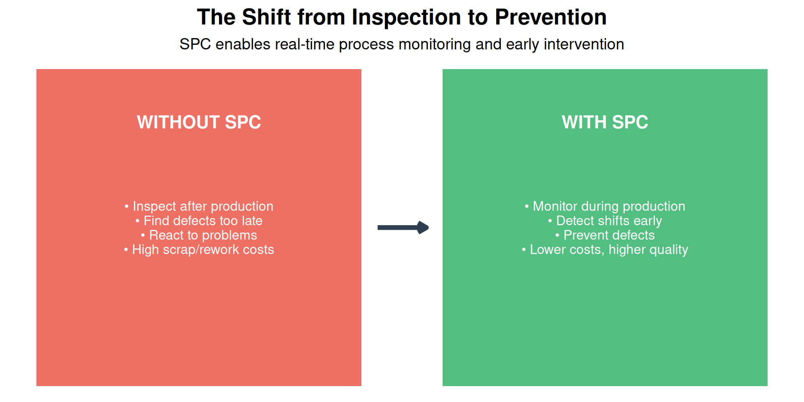
10 Statistical Process Control (SPC)
10.1 Learning Objectives
By the end of this chapter, you will be able to:
- Explain the purpose and benefits of Statistical Process Control
- Distinguish between common cause and special cause variation
- Select the appropriate control chart for different data types
- Construct and interpret X-bar/R, X-bar/S, and Individual-MR charts
- Construct and interpret attribute control charts (p, np, c, u)
- Apply control chart interpretation rules (Western Electric rules)
- Calculate and interpret process capability indices (Cp, Cpk, Pp, Ppk)
- Respond appropriately to out-of-control signals
“In God we trust; all others must bring data.” — W. Edwards Deming
10.2 Introduction to SPC
10.2.1 What is Statistical Process Control?
Statistical Process Control (SPC) is a method of quality control that uses statistical methods to monitor and control a process. It helps ensure that the process operates at its full potential to produce conforming product.
10.2.2 Brief History of SPC
| Year | Development | Significance |
|---|---|---|
| 1920s | Walter Shewhart develops control charts at Bell Labs | Birth of modern quality control |
| 1930s-40s | SPC used in WWII military production | Proved effectiveness in mass production |
| 1950s | Deming teaches SPC to Japanese industry | Foundation of Japanese quality revolution |
| 1980s | US automotive industry adopts SPC | Response to Japanese competition |
| 1990s | SPC becomes requirement in ISO/QS-9000 | Industry-wide standardization |
| 2000s+ | Real-time SPC, automated data collection | Integration with Industry 4.0 |
10.2.3 Why SPC Matters
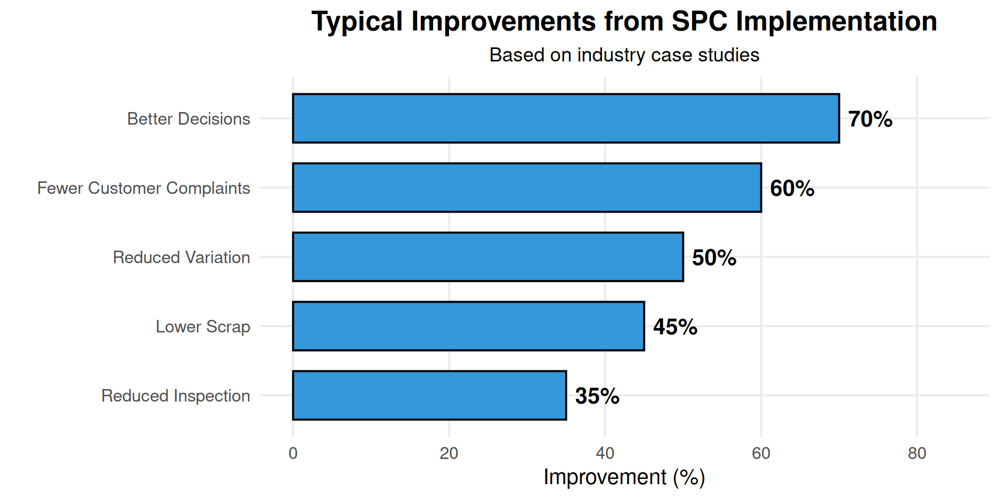
10.3 Understanding Variation
All processes exhibit variation. No two products are ever exactly identical. The key insight of SPC is that variation comes from two fundamentally different sources, and we must respond to them differently.
10.3.1 Common Cause vs. Special Cause Variation
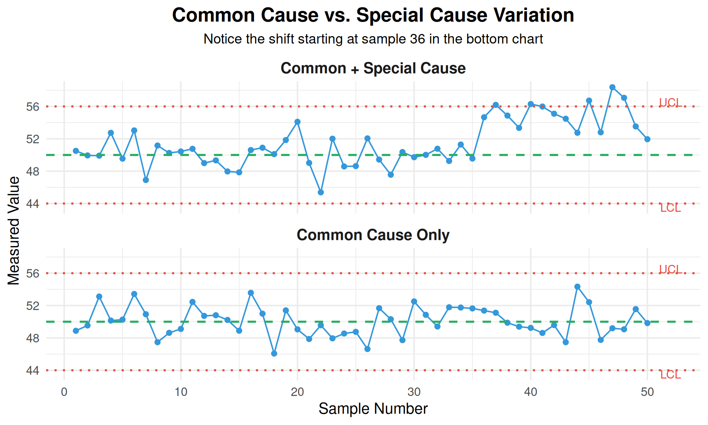
| Characteristic | Common Cause Variation | Special Cause Variation |
|---|---|---|
| **Other Names** | Random, chance, noise, inherent | Assignable, non-random, signal |
| **Source** | Built into the process; many small factors | Specific, identifiable event |
| **Pattern** | Random, stable, predictable pattern | Non-random; shifts, trends, patterns |
| **Predictability** | Statistically predictable within limits | Unpredictable; something changed |
| **Examples** | Machine vibration, material variation, ambient temperature | Tool breakage, new operator, bad material lot, power surge |
| **Action Required** | Improve the system (management decision) | Find and eliminate the cause |
| **Who Acts** | Management — requires system change | Operators/technicians — local action |
10.3.2 The Two Mistakes in Process Control
Understanding variation prevents two costly mistakes:
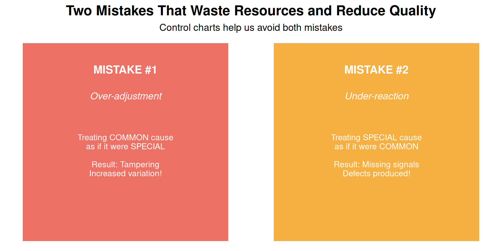
The Funnel Experiment: Why Tampering Makes Things Worse
Deming’s Funnel Experiment demonstrates why adjusting a stable process increases variation:
Setup: Drop a ball through a funnel onto a target. The ball lands near (but not exactly on) the target due to common cause variation.
Rule 1 (Correct): Leave the funnel alone. Variation remains constant.
Rule 2 (Tampering): After each drop, move the funnel to compensate for the last error. - Result: Variation DOUBLES!
Rule 3 (More Tampering): Move funnel to compensate relative to the target. - Result: Variation increases without bound!
Lesson: Adjusting a stable process based on individual deviations (common cause) actually makes the process worse. Only adjust when special causes are identified.
Real-World Example: An operator notices a part is 0.02mm below target and adjusts the machine. The next part is 0.03mm above target (the adjustment plus normal variation). They adjust again… and the process oscillates with increasing variation.
10.3.3 When is a Process “In Control”?
A process is in statistical control when:
- Only common cause variation is present
- All points fall within control limits
- No non-random patterns exist
- The process is stable and predictable
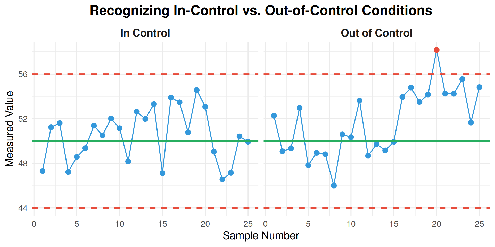
10.4 Control Charts: The Foundation of SPC
10.4.1 What is a Control Chart?
A control chart is a graph that shows process data over time with statistically determined control limits. It provides a visual method for distinguishing between common and special cause variation.
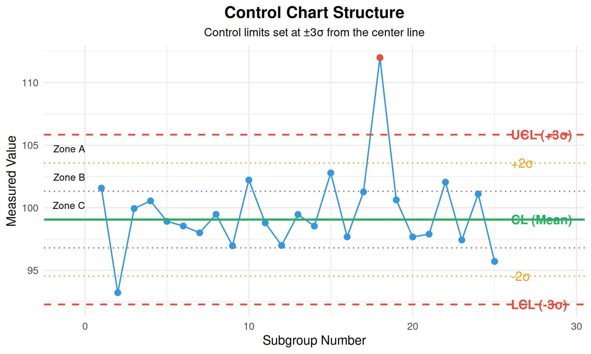
10.4.2 Control Chart Components
| Component | Description | Purpose |
|---|---|---|
| **Center Line (CL)** | The process average; target for the process | Shows where process is centered |
| **Upper Control Limit (UCL)** | Upper boundary of expected variation (+3σ) | Signals if process shifted too high |
| **Lower Control Limit (LCL)** | Lower boundary of expected variation (-3σ) | Signals if process shifted too low |
| **Data Points** | Individual or subgroup statistics plotted over time | Visual representation of process behavior |
| **Zones A, B, C** | Regions between ±1σ, ±2σ, and ±3σ for pattern analysis | Used for detecting trends and patterns |
10.4.3 Why ±3 Sigma?
Control limits are set at ±3 standard deviations from the center line. This is not arbitrary:
- For a normal distribution, 99.73% of data falls within ±3σ
- Only 0.27% (about 3 in 1000) will fall outside by chance
- This balances the risk of both mistakes (false alarms vs. missed signals)
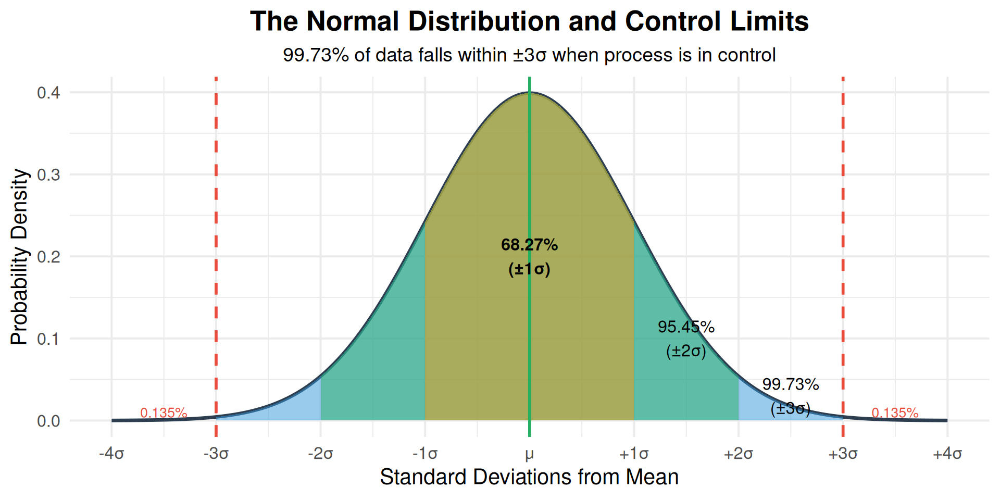
10.4.4 Choosing the Right Control Chart
The type of control chart depends on the type of data being collected:
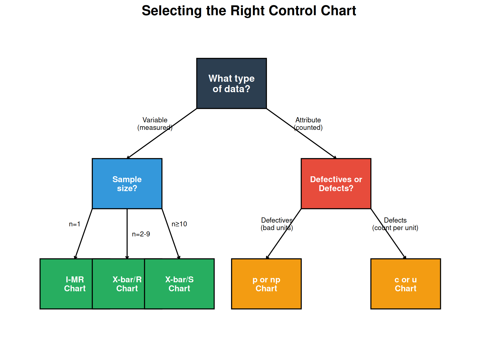
| Chart Type | Data Type | Sample Size | What It Charts | Typical Application |
|---|---|---|---|---|
| **X-bar / R** | Variable | 2-9 per subgroup | Subgroup mean and range | Production sampling, multiple measurements |
| **X-bar / S** | Variable | ≥10 per subgroup | Subgroup mean and std dev | Large subgroups, automated measurement |
| **I-MR** | Variable | 1 (individuals) | Individual values and moving range | Continuous processes, expensive testing |
| **p chart** | Attribute | Variable or constant | Proportion defective | Pass/fail inspection, variable sample size |
| **np chart** | Attribute | Constant | Number defective | Pass/fail inspection, fixed sample size |
| **c chart** | Attribute | Constant | Number of defects | Defects per item (scratches, errors) |
| **u chart** | Attribute | Variable | Defects per unit | Defects per unit area or time |
Question: Variable vs. Attribute Data - What’s the Difference?
Variable Data (Measured): - Can take any value within a range - Measured on a continuous scale - Examples: length, weight, temperature, voltage, pressure - More information per measurement - Smaller sample sizes needed
Attribute Data (Counted): - Discrete categories (good/bad, pass/fail) - Counted, not measured - Examples: number of defects, number of rejects, yes/no - Less information per observation - Larger sample sizes needed
When to Use Each: - Use variable data when you CAN measure (more powerful) - Use attribute data when you can only classify or count - Sometimes you convert variable to attribute (e.g., pass/fail based on tolerance)
10.5 Variable Control Charts
10.5.1 X-bar and R Chart
The X-bar and R chart is the most common control chart for variable data. It tracks both the process average (X-bar) and the process spread (Range).
10.5.1.1 Constructing an X-bar/R Chart
Step 1: Collect data in subgroups (typically 4-5 samples)
# Example: Measuring shaft diameter (mm)
# 25 subgroups of 5 measurements each
set.seed(100)
n_subgroups <- 25
n_samples <- 5
# Generate data
data <- matrix(rnorm(n_subgroups * n_samples, mean = 25.00, sd = 0.05),
nrow = n_subgroups, ncol = n_samples)
# Add a special cause (shift) at subgroup 18
data[18, ] <- data[18, ] + 0.12
# Calculate statistics for each subgroup
xbar <- apply(data, 1, mean)
R <- apply(data, 1, function(x) max(x) - min(x))
cat("First 5 subgroups:\n")
print(round(data[1:5, ], 4))
cat("\nX-bar values:", round(xbar[1:5], 4))
cat("\nRange values:", round(R[1:5], 4))First 5 subgroups:
[,1] [,2] [,3] [,4] [,5]
[1,] 24.9749 24.9781 24.9776 25.0006 24.9834
[2,] 25.0066 24.9640 24.9131 24.9456 25.0682
[3,] 24.9961 25.0115 25.0089 25.0135 24.9765
[4,] 25.0443 24.9421 25.0949 25.0504 25.0421
[5,] 25.0058 25.0124 24.8864 24.8963 24.9271
X-bar values: 24.9829 24.9795 25.0013 25.0348 24.9456
Range values: 0.0257 0.1551 0.037 0.1528 0.126Step 2: Calculate control limits
# Control chart constants for n=5
A2 <- 0.577
D3 <- 0 # D3 = 0 for n < 7
D4 <- 2.114
# Calculate grand mean and average range
X_double_bar <- mean(xbar)
R_bar <- mean(R)
cat("Grand Mean (X-double-bar):", round(X_double_bar, 4), "mm\n")
cat("Average Range (R-bar):", round(R_bar, 4), "mm\n\n")
# X-bar chart limits
UCL_xbar <- X_double_bar + A2 * R_bar
LCL_xbar <- X_double_bar - A2 * R_bar
cat("X-bar Chart:\n")
cat(" UCL =", round(UCL_xbar, 4), "mm\n")
cat(" CL =", round(X_double_bar, 4), "mm\n")
cat(" LCL =", round(LCL_xbar, 4), "mm\n\n")
# R chart limits
UCL_R <- D4 * R_bar
LCL_R <- D3 * R_bar
cat("R Chart:\n")
cat(" UCL =", round(UCL_R, 4), "mm\n")
cat(" CL =", round(R_bar, 4), "mm\n")
cat(" LCL =", round(LCL_R, 4), "mm\n")Grand Mean (X-double-bar): 25.004 mm
Average Range (R-bar): 0.1023 mm
X-bar Chart:
UCL = 25.0631 mm
CL = 25.004 mm
LCL = 24.945 mm
R Chart:
UCL = 0.2164 mm
CL = 0.1023 mm
LCL = 0 mmStep 3: Plot the charts
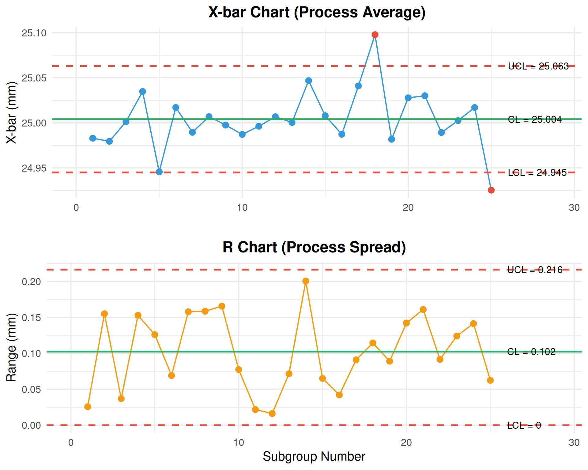
Interpretation: Subgroup 18 shows a point above the UCL on the X-bar chart, indicating a special cause. Investigation reveals the cause and corrective action is taken.
Live cell — enter your own subgroup means and ranges (or change A2/D3/D4 for a different subgroup size) and see the control limits recalculate.
10.5.2 Control Chart Constants
| n | A2 | D3 | D4 | d2 |
|---|---|---|---|---|
| 2 | 1.880 | 0.000 | 3.267 | 1.128 |
| 3 | 1.023 | 0.000 | 2.574 | 1.693 |
| 4 | 0.729 | 0.000 | 2.282 | 2.059 |
| 5 | 0.577 | 0.000 | 2.114 | 2.326 |
| 6 | 0.483 | 0.000 | 2.004 | 2.534 |
| 7 | 0.419 | 0.076 | 1.924 | 2.704 |
| 8 | 0.373 | 0.136 | 1.864 | 2.847 |
| 9 | 0.337 | 0.184 | 1.816 | 2.970 |
| 10 | 0.308 | 0.223 | 1.777 | 3.078 |
10.5.3 Individual and Moving Range (I-MR) Chart
When sample size is n = 1 (one measurement per time period), use the I-MR chart.
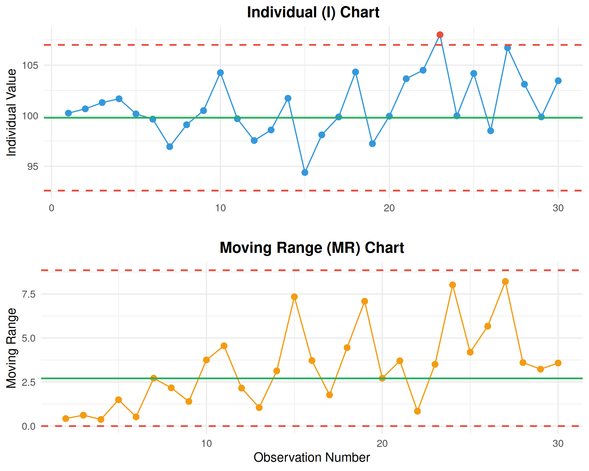
I-MR Chart Formulas:
| Chart | Center Line | UCL | LCL |
|---|---|---|---|
| I Chart | \(\bar{X}\) | \(\bar{X} + 2.66\bar{MR}\) | \(\bar{X} - 2.66\bar{MR}\) |
| MR Chart | \(\bar{MR}\) | \(3.267 \times \bar{MR}\) | 0 |
Live cell — enter your own individual measurements and see the I-MR limits and moving ranges recalculate.
10.6 Attribute Control Charts
10.6.1 p Chart (Proportion Defective)
The p chart tracks the proportion of defective units when sample sizes may vary.
# Example: Daily inspection data
# Varying sample sizes (different production volumes)
set.seed(300)
days <- 20
sample_sizes <- sample(80:120, days, replace = TRUE)
defectives <- rbinom(days, sample_sizes, prob = 0.05)
# Add a special cause on day 15
defectives[15] <- rbinom(1, sample_sizes[15], prob = 0.12)
# Calculate proportion
p <- defectives / sample_sizes
# Calculate p-bar (weighted average)
p_bar <- sum(defectives) / sum(sample_sizes)
cat("p-bar (average proportion defective):", round(p_bar, 4), "\n\n")
# Calculate control limits (vary with sample size)
UCL_p <- p_bar + 3 * sqrt(p_bar * (1 - p_bar) / sample_sizes)
LCL_p <- pmax(0, p_bar - 3 * sqrt(p_bar * (1 - p_bar) / sample_sizes))
cat("Sample of control limits (varying with n):\n")
cat("Day 1: UCL =", round(UCL_p[1], 4), ", LCL =", round(LCL_p[1], 4), "(n =", sample_sizes[1], ")\n")
cat("Day 5: UCL =", round(UCL_p[5], 4), ", LCL =", round(LCL_p[5], 4), "(n =", sample_sizes[5], ")\n")p-bar (average proportion defective): 0.0493
Sample of control limits (varying with n):
Day 1: UCL = 0.1167 , LCL = 0 (n = 93 )
Day 5: UCL = 0.1143 , LCL = 0 (n = 100 )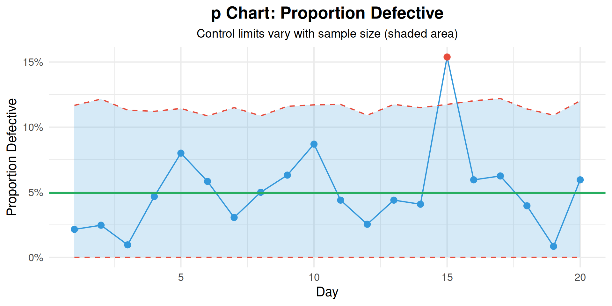
Live cell — try different defect counts and sample sizes and see p-bar and the control limits recalculate.
10.6.2 c Chart (Count of Defects)
The c chart tracks the number of defects when the sample size (area of opportunity) is constant.
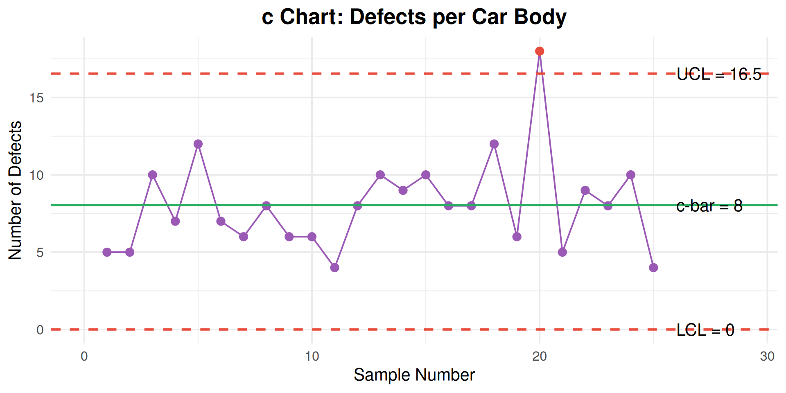
Live cell — try different defect counts and see the c chart limits recalculate.
| Chart | Center Line | UCL | LCL | Use When |
|---|---|---|---|---|
| **p chart** | $\bar{p} = \frac{\sum d}{\sum n}$ | $\bar{p} + 3\sqrt{\frac{\bar{p}(1-\bar{p})}{n}}$ | $\bar{p} - 3\sqrt{\frac{\bar{p}(1-\bar{p})}{n}}$ | Variable sample size, proportion needed |
| **np chart** | $\bar{np} = \frac{\sum d}{k}$ | $\bar{np} + 3\sqrt{\bar{np}(1-\bar{p})}$ | $\bar{np} - 3\sqrt{\bar{np}(1-\bar{p})}$ | Constant sample size, count preferred |
| **c chart** | $\bar{c} = \frac{\sum c}{k}$ | $\bar{c} + 3\sqrt{\bar{c}}$ | $\bar{c} - 3\sqrt{\bar{c}}$ | Constant opportunity, counting defects |
| **u chart** | $\bar{u} = \frac{\sum c}{\sum n}$ | $\bar{u} + 3\sqrt{\frac{\bar{u}}{n}}$ | $\bar{u} - 3\sqrt{\frac{\bar{u}}{n}}$ | Variable opportunity, defects per unit |
10.7 Interpreting Control Charts
10.7.1 Out-of-Control Signals (Western Electric Rules)
A point doesn’t have to be outside the control limits to indicate a problem. The Western Electric Rules identify non-random patterns:
| Rule | Pattern | Description | What It Indicates |
|---|---|---|---|
| Rule 1 | **Point beyond control limit** | One point above UCL or below LCL | Sudden shift, extreme event |
| Rule 2 | **Zone A: 2 of 3 consecutive points** | 2 out of 3 consecutive points in Zone A (>2σ) or beyond, same side | Process shift |
| Rule 3 | **Zone B: 4 of 5 consecutive points** | 4 out of 5 consecutive points in Zone B (>1σ) or beyond, same side | Process shift |
| Rule 4 | **8 consecutive points on one side** | 8 consecutive points above or below the center line | Process shift (mean has moved) |
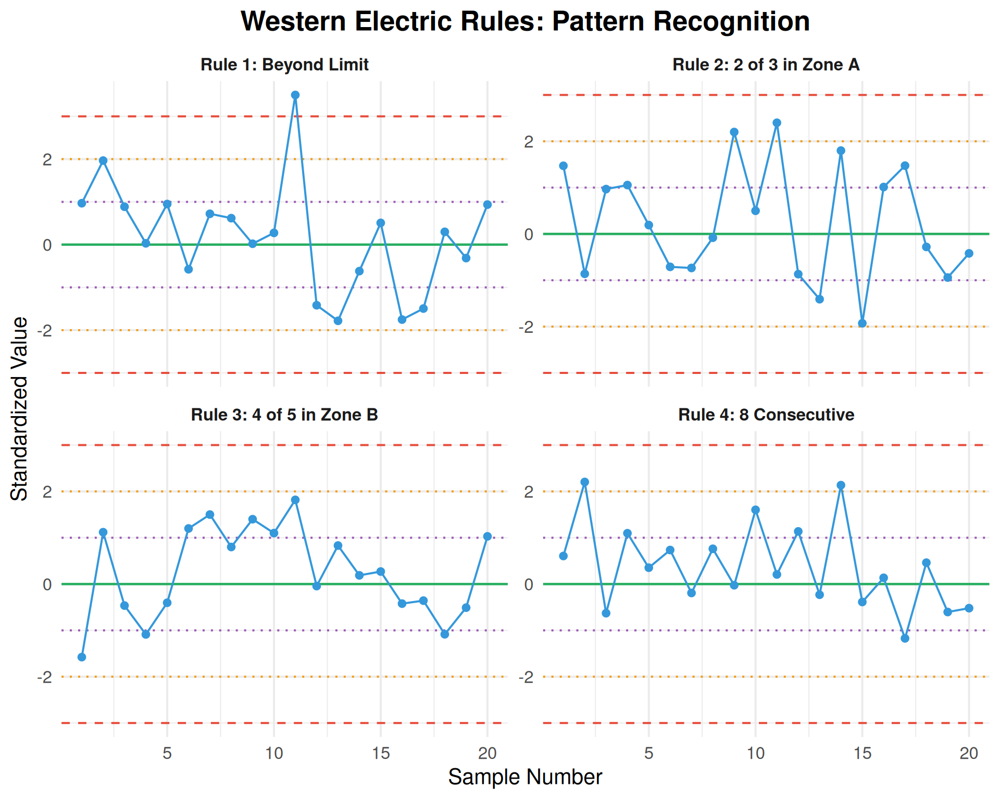
10.7.2 Additional Patterns to Watch For
| Pattern | Description | Possible Causes |
|---|---|---|
| **Trend** | 6 or more consecutive points steadily increasing or decreasing | Tool wear, temperature drift, operator fatigue |
| **Cycle** | Repeating high-low pattern | Shift changes, batch effects, temperature cycles |
| **Stratification** | Points consistently near center line (too little variation) | Incorrect limits, data manipulation, mixed streams |
| **Mixture** | Points avoiding center line (bimodal distribution) | Two machines, two operators, two material lots |
Interactive Exercise: Identify the Out-of-Control Condition
Look at this sequence of points (standardized values):
0.5, 0.8, 1.2, 0.9, 1.4, 1.6, 1.3, 1.8, -0.2, 0.3
Questions:
- Are any points beyond ±3σ?
- Is there a Rule 4 violation (8 consecutive on one side)?
- What pattern do you see?
Answers:
- No — all points are within ±3σ
- YES — Points 1-8 are all positive (above center line)
- This is a Rule 4 violation: 8 consecutive points above the center line indicates a likely process shift upward
Action: Investigate what changed — new material lot? Different operator? Equipment adjustment?
10.8 Process Capability
10.8.1 What is Process Capability?
Process capability compares the process performance to the specification limits. It answers: “Can this process consistently produce parts within tolerance?”
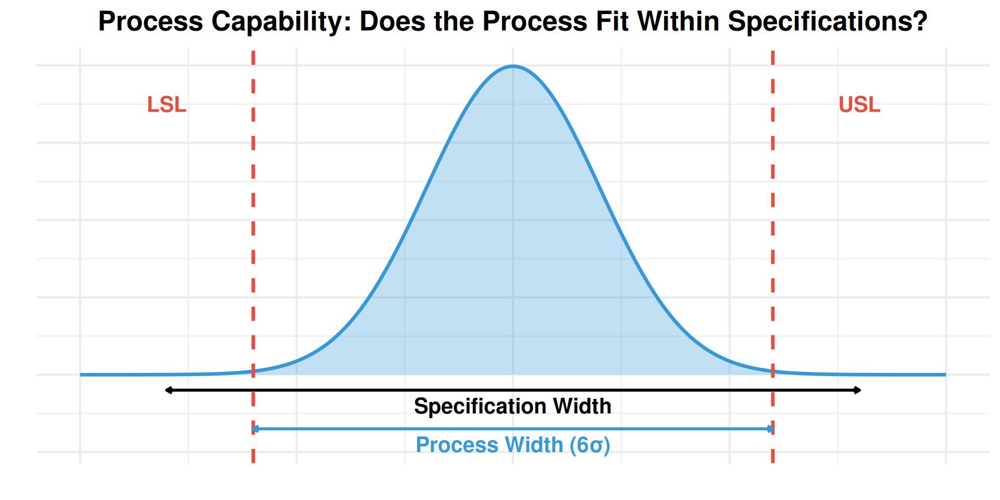
10.8.2 Capability Indices
| Index | Formula | What It Measures | σ Estimation |
|---|---|---|---|
| **Cp** | $\frac{USL - LSL}{6\sigma}$ | Potential capability (spread only) | Within-subgroup (R-bar/d2) |
| **Cpk** | $\min\left(\frac{USL - \bar{X}}{3\sigma}, \frac{\bar{X} - LSL}{3\sigma}\right)$ | Actual capability (spread + centering) | Within-subgroup (R-bar/d2) |
| **Pp** | $\frac{USL - LSL}{6s}$ | Overall performance (spread only) | Overall standard deviation (s) |
| **Ppk** | $\min\left(\frac{USL - \bar{X}}{3s}, \frac{\bar{X} - LSL}{3s}\right)$ | Overall performance (spread + centering) | Overall standard deviation (s) |
10.8.3 Cp vs. Cpk: Why Both Matter
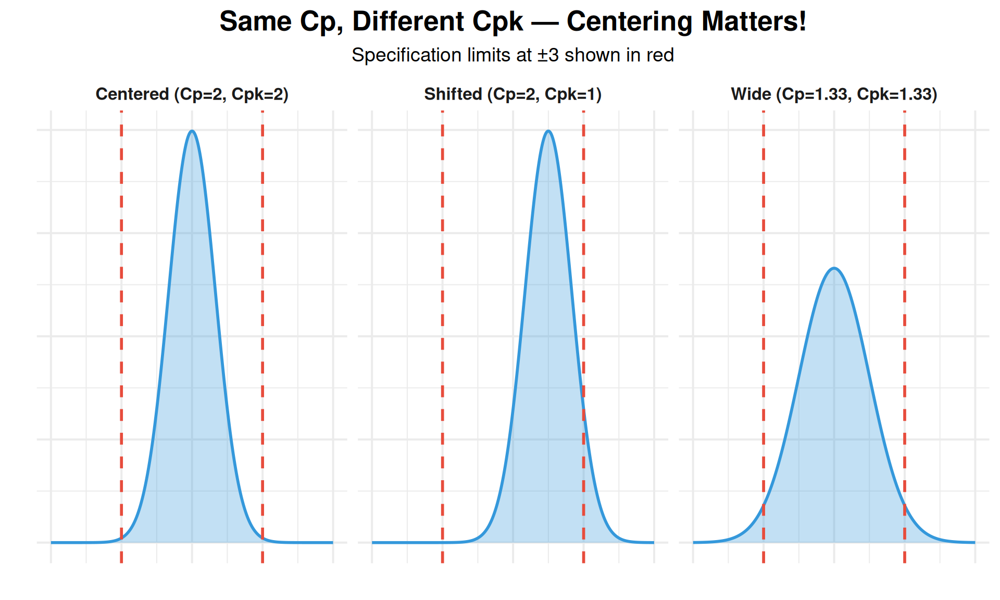
10.8.4 Capability Example Calculation
# Example: Shaft diameter specification 25.00 ± 0.15 mm
# Process data from 25 subgroups of 5
USL <- 25.15
LSL <- 24.85
Target <- 25.00
# Using earlier X-bar/R data
X_bar_cap <- mean(xbar)
R_bar_cap <- mean(R)
# Estimate sigma using R-bar/d2 (d2 = 2.326 for n=5)
d2 <- 2.326
sigma_within <- R_bar_cap / d2
cat("Process Statistics:\n")
cat(" Mean (X-bar):", round(X_bar_cap, 4), "mm\n")
cat(" Sigma (estimated):", round(sigma_within, 4), "mm\n\n")
# Calculate Cp
Cp <- (USL - LSL) / (6 * sigma_within)
cat("Cp =", round(Cp, 2), "\n")
# Calculate Cpk
Cpu <- (USL - X_bar_cap) / (3 * sigma_within)
Cpl <- (X_bar_cap - LSL) / (3 * sigma_within)
Cpk <- min(Cpu, Cpl)
cat("Cpu =", round(Cpu, 2), "\n")
cat("Cpl =", round(Cpl, 2), "\n")
cat("Cpk =", round(Cpk, 2), "\n\n")
# Interpretation
cat("Interpretation:\n")
if (Cpk >= 1.33) {
cat("Process is CAPABLE (Cpk >= 1.33)\n")
} else if (Cpk >= 1.00) {
cat("Process is MARGINALLY CAPABLE (1.00 <= Cpk < 1.33)\n")
} else {
cat("Process is NOT CAPABLE (Cpk < 1.00)\n")
}Process Statistics:
Mean (X-bar): 25.004 mm
Sigma (estimated): 0.044 mm
Cp = 1.14
Cpu = 1.11
Cpl = 1.17
Cpk = 1.11
Interpretation:
Process is MARGINALLY CAPABLE (1.00 <= Cpk < 1.33)Live cell — try different specification limits, process mean, and sigma to see how Cp and Cpk respond.
10.8.5 Capability Index Interpretation
| Cpk Value | Sigma Level | PPM Defective | Interpretation | Typical Industry |
|---|---|---|---|---|
| < 1.00 | < 3σ | > 2,700 | Not capable — improvement required | Requires immediate action |
| 1.00 - 1.33 | 3σ - 4σ | 2,700 - 64 | Marginally capable — monitor closely | Consumer products |
| 1.33 - 1.67 | 4σ - 5σ | 64 - 0.6 | Capable — meets typical requirements | General manufacturing |
| 1.67 - 2.00 | 5σ - 6σ | 0.6 - 0.002 | Good capability — automotive/aerospace | Automotive Tier 1 |
| > 2.00 | > 6σ | < 0.002 | Excellent — Six Sigma level | Aerospace, medical devices |
Question: When to use Cp/Cpk vs. Pp/Ppk?
Cp/Cpk (Process Capability): - Uses within-subgroup variation (σ estimated from R-bar/d2) - Represents the POTENTIAL capability if process is in control - Use for ongoing process monitoring - Requires process to be in statistical control
Pp/Ppk (Process Performance): - Uses overall standard deviation (s) of all data - Represents ACTUAL performance including all variation - Use for initial capability studies or when process stability is unknown - Includes both common and special cause variation
Rule of Thumb: - If Pp ≈ Cp and Ppk ≈ Cpk → Process is stable - If Pp < Cp or Ppk < Cpk → Process has special cause variation (not in control)
10.9 Responding to Out-of-Control Signals
10.9.1 The Response Process
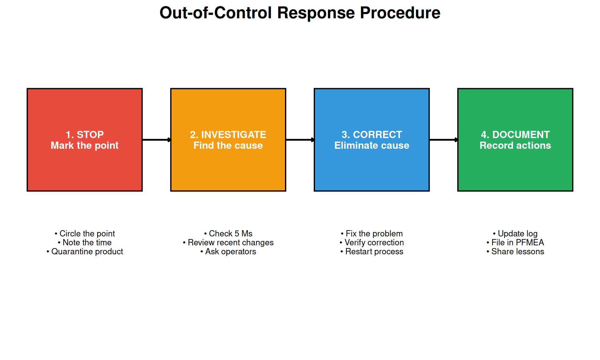
10.9.2 Investigation Checklist (5 Ms + E)
| Category | Questions to Ask |
|---|---|
| **Man** | Different operator? New employee? Fatigue? Training issue? |
| **Machine** | Equipment malfunction? Tool wear? Maintenance due? Setup change? |
| **Material** | New lot? Different supplier? Out-of-spec material? |
| **Method** | Procedure changed? Parameter drift? Wrong program? |
| **Measurement** | Gauge drift? Calibration due? Different inspector? |
| **Environment** | Temperature change? Humidity? Vibration? Contamination? |
10.10 SPC Implementation
10.10.1 Steps to Implement SPC
| Step | Action | Key Considerations |
|---|---|---|
| 1 | Select the process and characteristic | Start with critical/problem processes |
| 2 | Determine measurement system adequacy (MSA) | Gauge R&R must be acceptable (< 30%) |
| 3 | Collect initial data (25+ subgroups) | Process must be running normally |
| 4 | Calculate trial control limits | Limits based on actual process, not specs |
| 5 | Identify and remove special causes | Investigate each out-of-control point |
| 6 | Recalculate limits with stable data | These become the standard limits |
| 7 | Implement ongoing monitoring | Train operators, establish reaction plans |
| 8 | Review and improve continuously | Update limits when process improves |
10.10.2 Common SPC Mistakes
| Mistake | Why It's Wrong | Correct Approach |
|---|---|---|
| **Using specification limits as control limits** | Control limits are based on process performance, not specs | Calculate limits from process data (mean ± 3σ) |
| **Changing limits too frequently** | Limits should only change when process fundamentally changes | Use stable baseline; recalculate only after sustained improvement |
| **Ignoring the R chart** | R chart often signals problems before X-bar chart | Always analyze R chart first — variation stability |
| **Over-adjusting (tampering)** | Adjusting for common cause variation increases variation | Only adjust when special cause is identified |
| **Not acting on signals** | Defeats the purpose of SPC | Investigate and act on every out-of-control signal |
10.11 Summary
| Topic | Key Points |
|---|---|
| **Variation** | Common cause (inherent) vs. special cause (assignable); respond differently |
| **Control Charts** | Graph with UCL/LCL at ±3σ; distinguishes between variation types |
| **Variable Charts** | X-bar/R (n=2-9), X-bar/S (n≥10), I-MR (n=1) |
| **Attribute Charts** | p (proportion), np (count defectives), c (defects), u (defects/unit) |
| **Interpretation** | Western Electric rules: beyond limits, 2 of 3 in Zone A, 4 of 5 in Zone B, 8 consecutive |
| **Capability** | Cp (potential), Cpk (actual); ≥1.33 is capable; ≥1.67 for automotive |
10.12 Review Questions
10.12.1 Conceptual Questions
Question 1: What is the difference between common cause and special cause variation?
Common Cause Variation: - Inherent to the process - Always present - Random and predictable - Many small factors - System-level improvement required - Examples: machine vibration, material variation, ambient temperature
Special Cause Variation: - External to normal process - Intermittent or new - Non-random patterns - Specific assignable cause - Local action to eliminate - Examples: tool breakage, new operator, bad material lot
Key Point: Only act on special causes. Attempting to adjust for common cause variation (tampering) makes the process worse.
Question 2: Why are control limits set at ±3 sigma rather than ±2 sigma?
At ±3σ: - 99.73% of data falls within limits (when in control) - Only 0.27% false alarm rate (about 3 per 1000 points) - Good balance between detecting real problems and avoiding false alarms
If we used ±2σ: - 95.45% of data within limits - 4.55% false alarm rate (about 45 per 1000 points!) - Too many false alarms → operators ignore the chart
If we used ±4σ: - 99.99% within limits - Almost no false alarms - But we’d miss real problems (low sensitivity)
The ±3σ choice balances: - Risk of false alarm (treating common cause as special) - Risk of missed signal (treating special cause as common)
Question 3: When would you use an I-MR chart instead of an X-bar/R chart?
Use I-MR Chart When:
- Sample size is n = 1 — only one measurement per time period
- Destructive testing — can’t afford multiple samples
- Expensive measurement — time or cost prohibitive
- Continuous process — each reading is independent (batch process)
- Long intervals — measurements far apart in time
- Homogeneous batches — within-batch variation is negligible
Examples: - Daily chemical batch analysis - Weekly calibration check - Each lot incoming inspection (one sample per lot) - Continuous process temperature readings
Caution: I-MR charts are less sensitive than X-bar charts because averaging in subgroups reduces noise.
10.12.2 Calculation Questions
Question 4: Calculate control limits for an X-bar/R chart given the following data.
Given: - 20 subgroups of n = 4 measurements - Grand mean (X-double-bar) = 50.25 - Average range (R-bar) = 2.40 - Constants for n = 4: A2 = 0.729, D3 = 0, D4 = 2.282
Calculate UCL and LCL for both charts.
Solution:
X-bar Chart:
UCL = X-double-bar + A2 × R-bar
UCL = 50.25 + 0.729 × 2.40 = 50.25 + 1.75 = 52.00
LCL = X-double-bar - A2 × R-bar
LCL = 50.25 - 0.729 × 2.40 = 50.25 - 1.75 = 48.50
CL = 50.25R Chart:
UCL = D4 × R-bar = 2.282 × 2.40 = 5.48
LCL = D3 × R-bar = 0 × 2.40 = 0
CL = 2.40Question 5: Calculate Cp and Cpk for a process with the following data.
Given: - Specification: 100 ± 5 (USL = 105, LSL = 95) - Process mean = 102 - Process standard deviation (σ) = 1.5
Solution:
Cp (Potential Capability):
Cp = (USL - LSL) / (6σ)
Cp = (105 - 95) / (6 × 1.5)
Cp = 10 / 9 = 1.11Cpk (Actual Capability):
Cpu = (USL - X-bar) / (3σ) = (105 - 102) / (3 × 1.5) = 3 / 4.5 = 0.67
Cpl = (X-bar - LSL) / (3σ) = (102 - 95) / (3 × 1.5) = 7 / 4.5 = 1.56
Cpk = min(Cpu, Cpl) = min(0.67, 1.56) = 0.67Interpretation: - Cp = 1.11 suggests process spread could fit within specs IF centered - Cpk = 0.67 shows process is NOT capable because it’s shifted toward USL - Action: Center the process closer to 100 (target)
Question 6: A p chart has p-bar = 0.04 and sample size n = 200. Calculate control limits.
Solution:
Center Line:
CL = p-bar = 0.04 (4% defective)Upper Control Limit:
UCL = p-bar + 3 × √(p-bar × (1 - p-bar) / n)
UCL = 0.04 + 3 × √(0.04 × 0.96 / 200)
UCL = 0.04 + 3 × √(0.000192)
UCL = 0.04 + 3 × 0.01386
UCL = 0.04 + 0.0416 = 0.0816 (8.16%)Lower Control Limit:
LCL = p-bar - 3 × √(p-bar × (1 - p-bar) / n)
LCL = 0.04 - 0.0416 = -0.0016
Since LCL cannot be negative: LCL = 0Final Limits: - UCL = 8.16% - CL = 4.00% - LCL = 0%
10.12.3 Application Questions
Question 7: You observe 8 consecutive points above the center line but all within control limits. What does this indicate?
This is a Rule 4 violation (Western Electric Rules).
What it indicates: - The process mean has shifted upward - This is a SPECIAL CAUSE signal - Even though no points are beyond limits, the pattern is not random
Probability analysis: - Probability of a point above CL (random) = 0.5 - Probability of 8 consecutive above CL = 0.5^8 = 0.0039 (0.39%) - This is very unlikely by chance alone
Action required: 1. Stop and mark the chart 2. Investigate what changed around the time of the first high point 3. Check: new material lot? Tool change? Operator change? Temperature? 4. Correct the cause 5. Monitor to verify process returns to normal
Question 8: A process has Cp = 2.0 but Cpk = 1.0. What does this tell you?
Analysis:
Cp = 2.0 means: - Process spread (6σ) is half the specification width - The process COULD produce no defects if centered - Potential capability is excellent
Cpk = 1.0 means: - Process is off-center - Actual capability is only marginal - Some defects are being produced
The difference (Cp - Cpk = 1.0) indicates: - The process mean is shifted 3σ from the target - One side has much less margin than the other
Visual:
LSL Target USL
| | |
[====PROCESS====]
↑ shifted to one sideAction: - Center the process on target - After centering, Cpk should approach Cp (both ≈ 2.0) - This is an adjustment action, not a variation reduction
Question 9: Why should you always analyze the R chart before the X-bar chart?
The R chart should be analyzed first because:
- Control limits depend on variation:
- X-bar limits are calculated using R-bar
- If R is out of control, X-bar limits are unreliable
- R chart is more sensitive to variation changes:
- Tool wear shows on R chart before X-bar
- Inconsistent setup appears as increased R
- Process must be stable in variation first:
- A process can’t be “in control” if variation is changing
- Stable variation is a prerequisite for evaluating the mean
- Different actions for each:
- R chart problem → variation issue (consistency)
- X-bar problem → centering issue (average)
Rule: If R chart is out of control, fix that FIRST before interpreting the X-bar chart.
10.13 References
- Montgomery, D.C. (2019). Introduction to Statistical Quality Control (8th ed.). Wiley.
- Wheeler, D.J., & Chambers, D.S. (1992). Understanding Statistical Process Control (2nd ed.). SPC Press.
- AIAG. (2005). Statistical Process Control (SPC) Reference Manual (2nd ed.).
- Western Electric. (1956). Statistical Quality Control Handbook. AT&T.
- Deming, W.E. (1986). Out of the Crisis. MIT Press.
- Shewhart, W.A. (1931). Economic Control of Quality of Manufactured Product. Van Nostrand.
- ASTM E2587. Standard Practice for Use of Control Charts in Statistical Process Control.